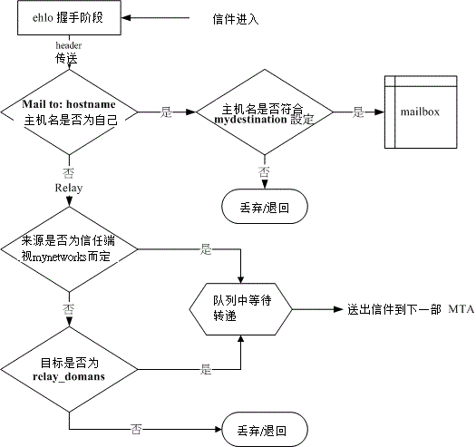

22.2 MTA 服务器： Postfix 基础设定
可达成 MTA 的服务器软件非常多，例如我们的 CentOS 预设就提供了数十年老牌子的 sendmail (http://www.sendmail.org) 以及近期以来很热门的 Postfix (http://www.postfix.org)。虽然 sendmail 曾是最为广泛使用的 mail server 软件，但由于 sendmail 的配置文件太过于难懂，以及早期的程序漏洞问题导致的主机安全性缺失；加上 sendmail 将所有的功能都统合在 /usr/sbin/sendmail 这个程序当中，导致程序太大可能会有效能方面的疑虑等等， 所以新版的 CentOS 已经将预设的 mail server 调整为 postfix 啰！我们这里也主要介绍 postfix。当然啦，原理方面都一样，您也可以自己玩玩其他的 mail server。
22.2.1 Postfix 的开发
Postfix 是由 Wietse Zweitze Venema 先生(http://www.porcupine.org/wietse)所发展的。早期的 mail server 都是使用 sendmail 架设的，还真的是『仅此一家，绝无分号』！不过，Venema 博士觉得 sendmail 虽然很好用，但是毕竟不够安全，尤其效能上面并不十分的理想，最大的困扰是...sendmail 的配置文件 sendmail.cf 真的是太难懂了！对于网管人员来说，要设定好 sendmail.cf 这个档案，真不是人作的工作。
为了改善这些问题， Venema 博士就在 1998 年利用他老大在 IBM 公司的第一个休假年进行一个计划：『 设计一个可以取代 sendmail 的软件套件，可以提供网站管理员一个更快速、 更安全、而且完全兼容于 sendmail 的 mail server 软件！』这个计划还真的成功了！ 而且也成功的使用在 IBM 内部，在 IBM 内可以说是完全取代了 sendmail 这个邮件服务器！在这个计划成功之后， Venema 博士也在 1998 年首次释出这个自行发展的邮件服务器，并定名为 VMailer。
不过，IBM 的律师却发现一件事，那就是 VMailer 这个名字与其他已注册的商标很类似， 这样可能会引起一些注册上面的困扰。为了避免这个问题，所以 Venema 博士就将这个邮件软件名称改为 Postfix ！『Post 有在什么什么之后』的意思，『fix 则是修订』的意思，所以 postfix 有 『在修订之后』的意思。
鸟哥个人认为， Venema 先生最早的构想并不是想要『创造一个全新的 Mail server 软件，而是想要制造一个可以完全兼容于 sendmail 的软件』，所以，Venema 先生认为他自行发展的软件应该是『改良 sendmail 的缺失』，所以才称为 Postfix 吧！取其意为： 『改良了 sendmail 之后的邮件服务器软件！』
所以啦， Postfix 设计的理念上面，主要是针对『想要完全兼容于 sendmail』所设计出来的一款『内在部分完全新颖』的一个邮件服务器软件。就是由于这个理念，因此 Postfix 改善了 sendmail 安全性上面的问题，改良了 mail server 的工作效率， 且让配置文件内容更具亲和力！因此，你可以轻易的由 sendmail 转换到 Postfix 上面！这也是当初 Venema 博士的最初构想啊！
就是基于这个构想，所以 Postfix 在外部配置文件案的支持度，与 sendmail 几乎没有两样，同样的支持 aliases 这个档案，同样的支持 ~/.forward 这个档案，也同样的支持 SASL 的 SMTP 邮件认证功能等等！ 所以，呵呵！赶紧来学一学怎样架设 Postfix 这个相当出色的邮件服务器吧！ ^_^
22.2.2 所需要的软件与软件结构
由于 CentOS 6.x 预设就是提供 postfix 的！所以根本无须调整啥咚咚～直接来使用吧！ 那么 postfix 有哪些重要的配置文件呢？他主要的配置文件都在 /etc/postfix/ 当中，详细的档案内容就让我们来谈谈：
/etc/postfix/main.cf 这就是主要的 postfix 配置文件啰，几乎所有的设定参数都是在这个档案内规范的！ 这个档案预设就是一个完整的说明档了，你可以参考这个档案的内容就设定好属于你的 postfix MTA 呢！ 只要修改过这个档案，记得要重新启动 postfix 喔！
/etc/postfix/master.cf 主要规定了 postfix 每个程序的运作参数，也是很重要的一个配置文件。不过这个档案预设已经很 OK 了，通常不需要更改他。
/etc/postfix/access (利用 postmap 处理) 可以设定开放 Relay 或拒绝联机的来源或目标地址等信息的外部配置文件，不过这个档案要生效还需要在 /etc/postfix/main.cf 启动这个档案的用途才行。且设定完毕后需要以 postmap 来处理成为数据库档案呢！
/etc/aliases (利用 postalias 或 newaliases 均可) 做为邮件别名的用途，也可以作为邮件群组的设定喔！
至于常见的执行档则有底下这些：
/usr/sbin/postconf (查阅 postfix 的设定数据) 这个指令可以列出目前你的 postfix 的详细设定数据，包括系统默认值也会被列出来， 所以数据量相当的庞大！如果你在 main.cf 里面曾经修改过某些预设参数的话，想要仅列出非默认值的设定数据， 则可以使用『postconf -n』这个选项即可。
/usr/sbin/postfix (主要的 daemon 指令) 此为 postfix 的主要执行档，你可以简单的使用他来启动或重新读取配置文件：
[root@www ~]# postfix check <==检查 postfix 相关的档案、权限等是否正确！ [root@www ~]# postfix start <==开始 postfix 的执行 [root@www ~]# postfix stop <==关闭 postfix [root@www ~]# postfix flush <==强制将目前正在邮件队列的邮件寄出！ [root@www ~]# postfix reload <==重新读入配置文件，也就是 /etc/postfix/main.cf要注意的是，每次更动过 main.cf 后，务必重新启动 postfix，可简单的使用『postfix reload』即可。不过老实说，鸟哥还是习惯使用 /etc/init.d/postfix reload..
/usr/sbin/postalias 设定别名数据库的指令，因为 MTA 读取数据库格式的档案效能较佳，所以我们都会将 ASCII 格式的档案重建为数据库。 在 postfix 当中，这个指令主要在转换 /etc/aliases 成为 /etc/aliases.db 啰！用法为：
[root@www ~]# postalias hash:/etc/aliases # hash 为一种数据库的格式，然后那个 /etc/aliases.db 就会自动被更新啰！/usr/sbin/postcat 主要用在检查放在 queue (队列) 当中的信件内容。由于队列当中的信件内容是给 MTA 看的， 所以格式并不是一般我们人类看的懂的文字数据。所以这个时候你得要用 postcat 才可以看出该信件的内容。 在 /var/spool/postfix 内有相当多的目录，假设内有一个文件名为 /deferred/abcfile ， 那你可以利用底下的方式来查询该档案的内容喔：
[root@www ~]# postcat /var/spool/postfix/deferred/abcfile/usr/sbin/postmap 这个指令的用法与 postalias 类似，不过他主要在转换 access 这个档案的数据库啦！用法为：
[root@www ~]# postmap hash:/etc/postfix/access/usr/sbin/postqueue 类似 mailq 的输出结果，例如你可以输入『postqueue -p』看看就知道了！
整个 postfix 的软件结构大致上是这个样子的，接下来让我们先来简单的处理一下 postfix 的收发信件功能吧！
22.2.3 一个邮件服务器的设定案例
前面谈到 mail server 与 DNS 系统有很大的相关性，所以如果你想要架设一部可以连上 Internet 的邮件服务器时， 你必需要已经取得合法的 A 与 MX 主机名，而且最好反解也已经向您的 ISP 申请修改设定了， 这可是个大前提！不要忽略他！在底下的练习当中鸟哥以之前十九章 DNS 内的设定为依据，主要的参数是这样的：
- 邮件服务器的主要名称为： www.centos.vbird
- 邮件服务器尚有别名为 linux.centos.vbird 及 ftp.centos.vbird 也可以收发信件；
- 此邮件服务器已有 MX 设定，直接指向自己 (www.centos.vbird)
- 这个 www.centos.vbird 有个 A 的标志指向 192.168.100.254。
在实际的邮件服务器设定当中，上述的几个标志是很重要的，请自行参考 DNS 章节的介绍吧！底下就让我们来实际设定 postfix 服务器啰！
22.2.4 让 Postfix 可监听 Internet 来收发信件
在预设的情况下，CentOS 6.x 的 MTA 仅针对本机进行监听，不相信吗？测测看：
[root@www ~]# netstat -tlnp | grep :25
Proto Recv-Q Send-Q Local Address Foreign Address State PID/Program name
tcp 0 0 127.0.0.1:25 0.0.0.0:* LISTEN 3167/master
所以如果你要对整个 Internet 开放的话，就得要努力的搞定几个简单的设定啰！而几乎所有的设定你都可已经由 /etc/postfix/main.cf 这个档案搞定！修改前你需要注意的项目有：
- 『 # 』符号是批注的意思；
- 所有设定值以类似『变量』的设定方法来处理，例如 myhostname = www.centos.vbird，请注意等号的两边要给予空格符喔， 且第一个字符不可以是空白，亦即『my..』要由行首写起；
- 可以使用『 $ 』来延伸使用变量设定，例如 myorigin = $myhostname，会等于 myorigin = www.centos.vbird；
- 如果该变量支持两个以上的数据，则使用空格符来分隔，不过建议使用逗号加空格符『, 』来处理。 例如： mydestination = $myhostname, $mydomain, linux.centos.vbird，意指 mydestination 支持三个数据内容之意。
- 可使用多行来表示同一个设定值，只要在第一行最后有逗号，且第二行开头为空格符， 即可将数据延伸到第二行继续书写 (所以刚刚第二点才说，开头不能留白！)；
- 若重复设定某一项目，则以较晚出现的设定值为准！
要让你的 postfix 可以收发信件时，你必需要启动的设定数据有底下这些喔：
myhostname：设定主机名，需使用 FQDN 喔
这个项目在于设定你的主机名，且这个设定值会被后续很多其他的参数所引用，所以必须要设定正确才行。 你应该要设定成为完整的主机名。在鸟哥的这个练习当中，应该设定为： myhostname = www.centos.vbird 才对。 除了这个设定值之外，还有一个 mydomain 的设定项目，这个项目默认会取 $myhostname 第一个『.』之后的名称。 举例来说上头设定完毕后，预设的 mydomain 就是 centos.vbird 啰！你也可以自行设定他。
myorigin ：发信时所显示的『发信源主机』项目
这个项目在设定『邮件头上面的 mail from 的那个地址』， 也就是代表本 MTA 传出去的信件将以此设定值为准喔！如果你在本机寄信时忘记加上 Mail from 字样的话， 那么就以此值为准了。默认这个项目以 $myhostname 为主的，例如： myorigin = $myhostname
inet_interfaces ：设定 postfix 的监听接口 (极重要)
在预设的情况下你的 Postfix 只会监听本机接口的 lo (127.0.0.1) 而已，如果你想要监听整个 Internet 的话， 请开放成为对外的接口，或者是开放给全部的接口，常见的设定方法为： inet_interfaces = all 才对！ 由于如果有重复设定项目时，会以最晚出现的设定值为准，所以最好只保留一组 inet_interfaces 的设定喔！
inet_protocols ：设定 postfix 的监听 IP 协议
预设 CentOS 的 postfix 会去同时监听 IPv4, IPv6 两个版本的 IP，如果你的网络环境里面仅有 IPv4 时，那可以直接指定 inet_protocols = ipv4 就会避免看到 :::1 之类的 IP 出现呦！
mydestination ：设定『能够收信的主机名』 (极重要)
这个设定项目很重要喔！因为我们的主机有非常多的名字，那么对方填写的 mail to 到底要写哪个主机名字我们才能将该信件收下？ 就是在这里规范的！也就是说，你的许多主机名当中，仅有写入这个设定值的名称才能作为 email 的主机地址。 在我们这个练习当中这部主机有三个名字，所以写法为： mydestination = $myhostname, localhost, linux.centos.vbird, ftp.centos.vbird
如果你想要将此设定值移动到外部档案，那可以使用类似底下的作法： mydestination = /etc/postfix/local-host-names ，然后在 local-host-names 里面将可收信的主机名写入即可。一般来说，不建议你额外建立 local-host-names 这个档案啦， 直接写入 main.cf 即可说！特别留意的是，如果你的 DNS 里头的设定有 MX 标志的话，那么请将 MX 指向的那个主机名一定要写在这个 mydestination 内， 否则很容易出现错误讯息喔！一般来说，使用者最常发生错误的地方就在这个设定里头呢！
mynetworks_style ：设定『信任网域』的一项指标
这个设定值在规定『与主机在同一个网域的可信任客户端』的意思！举例来说，鸟哥的主机 IP 是 192.168.100.254，如果我相信整个局域网络内 (192.168.100.0/24) 的用户的话，那我可规定此设定值为『 subnet 』吶！ 不过，一般来说，因为底下的 mynetworks 会取代这个设定值， 所以不设定也没有关系喔！如果要设定的话，最好设定成为 host 即可 (亦即仅信任这部 MTA 主机而已)。
mynetworks ：规定信任的客户端 (极重要)
你的 MTA 能不能帮忙进行 Relay 与这个设定值最有关系！举例来说，我要开放本机与内部网域的 IP 时，就可以这样进行设定： mynetworks = 127.0.0.0/8, 192.168.100.0/24。如果你想要以 /etc/postfix/access 这个档案来控制 relay 的用户时，那鸟哥可以建议你将上述的数据改写成这样： mynetworks = 127.0.0.0/8, 192.168.100.0/24, hash:/etc/postfix/access 然后你只要再建立 access 之后重整成数据库后，嘿嘿！就能够设定 Relay 的用户啰！
relay_domains ：规范可以帮忙 relay 的下一部 MTA 主机地址
相对于 mynetworks 是针对『信任的客户端』而设定的，这个 relay_domains 则可以视为『针对下游 MTA 服务器』而设定的。举例来说，如果你这部主机是 www.niki.centos.vbird 的 MX 主机时， 那你就得要在 relay_domains 设定针对整个 niki.centos.vbird 这个领域的目标信件进行转递才行。 在预设的情况下，这个设定值是 $mydestination 而已啦。
你必需要注意的『Postfix 预设并不会转递 MX 主机的信件』，意思就是说：如果你有两部主机，一部是上游的 MTAup ，一部是下游的 MTAdown ，而 MTAdown 规范的 MX 主机是 MTAup，由 22.1.2 谈到的 DNS 的 MX 设定值与信件传递方向，我们知道任何想要寄给 MTAdown 主机的信件， 都会先经过 MTAup 来转递才行！此时如果那部 MTAup 没有开启帮 MTAdown 进行 relay 的权限时， 那么任何传给 MTAdown 的信件将『全部都被 MTAup 所退回』！从此 MTAdown 就无法收到任何信件了。
上一段的说明请您特别再想一想，因为如果你在大公司服务而且你的公司上、下游均有 mail server 时， 并且也有设定 MX 的状况下，嘿嘿！这个 relay_domains 就很重要啦！上游的 MTA 主机必需要启动这个设定。 一般来说除非你是某部 MTA 主机的 MX 源头，否则这个设定项目可以忽略不设定他。 而如果你想要帮你的客户端转递信件到某部特定的 MTA 主机时，这个设定项目也是可以设定的啦。 默认请您保留默认值即可。
alias_maps ：设定邮件别名
就是设定邮件别名的设定项目，只要指定到正确的档案去即可，这个设定值可以保留默认值啊：
在了解上述的设定后，以鸟哥的范例来看的话，鸟哥有更动过或注明重要的设定值以及相关档案是这样处理的：
[root@www ~]# vim /etc/postfix/main.cf
myhostname = www.centos.vbird <==约在第 77 行
myorigin = $myhostname <==约在第 99 行
inet_interfaces = all <==约在第 114 行，117 行要批注掉
inet_protocols = ipv4 <==约在第 120 行
mydestination = $myhostname, localhost.$mydomain, localhost,
linux.centos.vbird, ftp.centos.vbird <==约在第 165,166 行
mynetworks = 127.0.0.0/8, 192.168.100.0/24, hash:/etc/postfix/access <==约在269行
relay_domains = $mydestination <==约在第 299 行
alias_maps = hash:/etc/aliases
alias_database = hash:/etc/aliases <==约在第 389, 400 行
# 其他的设定值就先保留默认值即可啊！
[root@www ~]# postmap hash:/etc/postfix/access
[root@www ~]# postalias hash:/etc/aliases
因为 main.cf 当中我们有额外加入两个外部配置文件 (mynetworks 及 alias_maps) ，所以才会额外进行 postmap 及 postalias。然后准备来启动啦！你可以这样处理喔：
# 1\. 先检查配置文件的语法是否有错误
[root@www ~]# /etc/init.d/postfix check <==没有讯息，表示没有问题。
# 2\. 启动与观察 port number
[root@www ~]# /etc/init.d/postfix restart
[root@www ~]# netstat -tlunp | grep ':25'
Proto Recv-Q Send-Q Local Address Foreign Address State PID/Program name
tcp 0 0 0.0.0.0:25 0.0.0.0:* LISTEN 13697/master
很简单吧！这样就设定妥当了。假设你的防火墙已经处理完毕，那你的 Postfix 已经可以开放客户端进行转递，并且也可以收受信件啰！不过，到底在预设的情况下我们的 postfix 可以收下哪些信件？又可以针对哪些设定值的内容进行转递呢？这就得要参考下一小节的说明了。
22.2.5 信件传送流程与收信、relay 等重要观念
我想，您对于 MTA 的设定与收发信件应该有一定程度的概念了，不过要妥善设定好你的 MTA 时， 尤其是想要了解到整部 MTA 是如何收、发信件时，你最好还是要知道『我这部 MTA 如何接受来源主机所传来的信件，以及将信件转递到下一部主机去』的整个流程啊。 一般来说一封邮件传送会经过许多的流程为：
送信端与收信端两部主机间会先经过一个握手 (ehlo) 的阶段，此时送信端被记录为发信来源(而不是 mail from)。 通过握手后就可以进行信件标头 (header) 的传送；
此时收信端主机会分析标头的信息，若信件之 Mail to: 主机名为收信端主机，且该名称符合 <u>mydestination</u> 的设定，则该信件会开始被收下至队列，并进一步送到 mailbox 当中； 若不符合 <u>mydestination</u> 的设定，则终止联机且不会进行信件内容 (body) 的传送；
若 Mail to: 主机名非为收信端本身，则开始进行转递 (relay) 的分析。
转递过程首先分析该信件的来源是否符合信任的客户端 (这个客户端为步骤 1 所记录的发信主机喔)，亦即来源是否符合 <u>mynetworks</u> 的设定值，若符合则开始收下信件至队列中，并等待 MDA 将信件再转递出去，若不符 mynetworks 则继续下一步；
分析信件来源或目标是否符合 <u>relay_domains</u> 的设定，若符合则信件将被收下至队列，并等待 MDA 将信件再转递出去；
若这封信的标头数据都不合乎上述的规范，则终止联机，并不会接受信件的内容数据的。
整个流程有点像底下这样：
 图 22.2-1、在本机 MTA 当中的信件分析过程
也就是说标头分析通过后，你的信件内容才会开始上传到主机的队列，然后透过 MDA 来处理该信件的流向。 而不是将信件完整的传送到主机后才开始分析的喔！这个得要特别注意吶！而透过上述的流程后， 在暂不考虑 access 以及 MDA 的分析机制中，一部 MTA 想要正确的收、发信件时，电子邮件必需要符合：
收信方面：必需符合底下需求：
- 发信端必需符合 $inet_interfaces 的设定；
- 信件标头之收件者主机名必需符合 $mydestination 的设定， 或者收件主机名需要符合 $virtual_maps (与虚拟主机有关) 的设定；
转递方面 (Relay)：必需符合底下需求：
- 发信端必需符合 $inet_interfaces 的设定；
- 发信端来源必需为 $mynetworks 的设定；发信端来源或信件标头之收件者主机名符合 $relay_domains 之设定内容。
同样的原理与想法你可以将他用在 sendmail 的设定当中喔！ ^_^！不过很多垃圾信却是藉由这个预设的收发管道来发送， 怎么说呢？请看底下的分析：
例题：在我的主机上面竟然发现这样的广告信，那就是『利用我的主机发送广告信给我自己！』为什么这样也可以呢？答：首先，你必需要熟悉一下上述的流程，在第 2 个步骤当中我们知道，当主机收到一封信且这封信的目标是自己， 并且也符合 mydestination 的设定时，该信件就会被收下来而不必验证客户端是否来自于 mynetworks 了。 所以说，任何人都可以用这个流程来寄信给你啊。不过，你的 MTA 并不是 open relay 啦，不会帮人家发送广告信的，不用担心。
例题：我的主机明明没有 Open relay ，但很多其他的 MTA 管理员发信给我，说我的主机的某个账号持续发送广告信， 但是我的主机明明没有那个账号啊！这是怎么回事？答：仔细看一下流程的步骤 1 与 2 ，确认该封信能否被收下来与发信端及收信端主机名有关。 而我们知道在邮件的 header 里面还有一个 mail from 的标头设定项目，这个标头设定是我们在查阅邮件时看到的『回邮地址』， 这个数据是可以伪造的！而且他与收发信件的数据无关！所以，您应该要告知对方 MTA 管理员， 请他提供详细的 log 数据，才能够判断该封信是否由你的主机所发送出去的。
一般来说，目前的广告业者很多都是利用这种欺敌的方式来处理的，所以您必需要请对方提供详细的 log file 数据以供查验才行喔！
22.2.6 设定邮件主机权限与过滤机制 /etc/postfix/access
基本上，指定了 Postfix 的 mynetworks 的信任来源就能够让使用者 relay 了，不过如果你依照鸟哥上述的方式 (22.2.4) 来设定你的 mynetworks 的话，那么我们还可以利用 access 这个档案来额外管理我们的信件过滤呢！基本的 access 语法为：
规范的范围或规则 Postfix 的动作 (范例如下)
IP/部分IP/主机名/Email等 OK/REJECT
假设你想要让 120.114.141.60 还有 .edu.tw 可以使用这部 MTA 来转递信件，且不许 av.com 以及 192.168.2.0/24 这个网域的使用时，可以这样做：
[root@www ~]# vim /etc/postfix/access
120.114.141.60 OK
.edu.tw OK
av.com REJECT
192.168.2\. REJECT
# OK 表示可接受，而 REJECT 则表示拒绝。
[root@www ~]# postmap hash:/etc/postfix/access
[root@www ~]# ls -l /etc/postfix/access*
-rw-r--r--. 1 root root 19648 2011-08-09 14:05 /etc/postfix/access
-rw-r--r--. 1 root root 12288 2011-08-09 14:08 /etc/postfix/access.db
# 你会发现有个 access.db 的档案才会同步更新！这才是 postfix 实际读取的！
用这个档案设定最大的好处是，你不必重新启动 postfix，只要将数据库建立好， 立刻就生效了！这个档案还有其它的进阶功能，你可以自行进入该档案查阅就知道了。但是进阶设定还需要 main.cf 内的其他参数有设定才行！如果只有之前 $mynetworks 的设定值时，你只能利用 access.db 的方式来开放 relay 的能力而已。不过，至少他可以让我们的设定简化啰！ ^_^
22.2.7 设定邮件别名： /etc/aliases, ~/.forward
想一想，你的主机里面不是有很多系统账号吗？例如 named, apache, mysql...， 那么以这些账号执行的程序若有讯息发生时，他会将该讯息以 email 的方式传给谁？应该就是传给 named, apache... 等账号自己吧。 不过，你会发现其实这些系统账号的信息都是丢给 root！ 这是因为其他的系统账号并没有密码可登入，自然也就无法接收任何邮件了，所以若有邮件就给系统管理员啰。不过，咱们的 MTA 怎么知道这些信件要传给 root ？这就得要 aliases 这个邮件别名配置文件来处理啦！
- 邮件别名配置文件： /etc/aliases
在你的 /etc/aliases 档案内，你会发现类似底下的字样：
[root@www ~]# vim /etc/aliases
mailer-daemon: postmaster
postmaster: root
bin: root
daemon: root
....(底下省略)....
左边是『别名』右边是『实际存在的使用者账号或者是 email address』！ 就是透过这个设定值，所以让我们可以将所有系统账号所属的信件通通丢给 root 啊！好，我们现在将他扩大化，假如你的 MTA 内有一个实际的账号名称为 dmtsai ，这个使用者还想要使用 dermintsai 这个名称来收他的信件， 那么你可以这样做：
[root@www ~]# vim /etc/aliases
dermintsai: dmtsai
# 左边是你额外所设定的，右边则是实际接收这封信的账号！
[root@www ~]# postalias hash:/etc/aliases
[root@www ~]# ll /etc/aliases*
-rw-r--r--. 1 root root 1535 2011-08-09 14:10 /etc/aliases
-rw-r--r--. 1 root root 12288 2011-08-09 14:10 /etc/aliases.db
从此之后不论是 dmtsai@www.centos.vbird 还是 dermintsai@www.centos.vbird 都会将信件丢到 /var/spool/mail/dmtsai 这个信箱当中喔！很方便吧！
- /etc/aliases 实际应用一：让一般账号可接收 root 的信
假设你是系统管理员，而你常用的一般账号为 dmtsai，但是系统出错时的重要信件都是寄给 root 啊， 偏偏 root 的信件不能被直接读取....所以说，如果能够将『给 root 的信也转寄一份给 dmtsai 』的话， 那就太好了！可以达到吗？当然可以！你可以这样做：
[root@www ~]# vim /etc/aliases
root: root,dmtsai <==鸟哥建议这种写法！
# 信件会传给 root 与 dmtsai 这两个账号！
root: dmtsai <==如果 dmtsai 不再是管理员怎办？
# 从此 root 收不到信了，都由 dmtsai 来接受！
[root@www ~]# postalias hash:/etc/aliases
上面那两行你可以择一使用，看看 root 要不要保留他的信件都可以的！鸟哥建议使用第一种方式，因为这样一来， 你的 dmtsai 可以收到 root 的信，且 root 自己也可以『备份』一份在他的信箱内，比较安全啦！
- /etc/aliases 实际应用二：发送群组寄信功能
想象一个情况，如果你是学校的老师，你虽然只带一班导生，但是『每年都一班』时，如果有一天你要将信发给所有的学生， 那在写 email 的标头时，可能就会头昏昏的了 (因为联络人名单太多了)！这个时候你可以这样做： (假设主机上学生的账号为 std001, std002... )
[root@www ~]# vim /etc/aliases
student2011: std001,std002,std003,std004...
[root@www ~]# postalias hash:/etc/aliases
如此一来只要寄信到这部主机的 student2011 这个不存在的账号时，该封信就会被分别存到各个账号里头去， 管理上面是否很方便啊！ ^_^！事实上，邮件别名除了填写自己主机上面的实体用户之外，其实你可以填写外部主机的 email 喔！ 例如你要将本机的 dermintsai 那个不存在的用户的信件除了传给 dmtsai 之外，还要外传到 dmtsai@mail.niki.centos.vbird 时，可以这样做：
[root@www ~]# vim /etc/aliases
dermintasi: dmtsai,dmtsai@mail.niki.centos.vbird
[root@www ~]# postalias hash:/etc/aliases
很方便吧！更多的功能就期待您自行发掘啰！
Tips: 在这本书里面，dmtai 的家目录并非在正规的 /home 底下，而是放置于 /winhome 当中 (参考第十六章的练习)，所以实际操作 mail 指令会出错！这是因为 SELinux 的关系！请参考 /var/log/messages 底下的建议动作去处理即可！

- 个人化的邮件转递： ~/.forward
虽然 /etc/aliases 可以帮我们达到邮件别名设定的好处，不过 /etc/aliases 是只有 root 才能修改的档案权限， 那我们一般使用者如果也想要进行邮件转递时，该如何是好？没关系，可以透过自己家目录下的 .forward 这个档案喔！ 举例来说，我的 dmtsai 这个账号所接收到的信件除了自己要保留一份之外，还要传给本机上的 vbird 以及 dmtsai@mail.niki.centos.vbird 时，那你可以这样做设定：
[dmtsai@www ~]$ vim .forward
# 注意！我现在的身份现在是 dmtsai 这个一般身份，而且在他的家目录下！
dmtsai
vbird
dmtsai@mail.niki.centos.vbird
[dmtsai@www ~]$ chmod 644 .forward
记得这个档案内容是一行一个账号 (或 email) ，而且权限方面非常重要：
- 该档案所在用户家目录权限，其 group、other 不可以有写入权限。
- .forward 档案权限，其 group、other 不可以有写入权限。
如此一来这封信就会开始转递啰！有趣吧！ ^_^
22.2.8 察看信件队列信息： postqueue, mailq
说实话，设定到此为止咱们的 postfix 应该可以应付一般小型企业之 mail server 的用途了！ 不过，有的时候毕竟因为网络的问题或者是对方主机的问题，可能导致某些信件无法送出而被暂存在队列中， 那我们如何了解队列当中有哪些邮件呢？还有，在队列当中等待送出的信件是如何送出的呢？
- 如果该封信在五分钟之内无法寄出，则通常系统会发出一封『警告信』给原发信者， 告知该封邮件尚无法被寄送出去，不过，系统仍会持续的尝试寄出该封邮件；
- 如果在四小时候仍无法寄出，系统会再次的发出警告信给原发信者；
- 如果持续进行五天都无法将信件送出，那么该封邮件就会退回给原发信者了！
当然啦，某些 MTA 已经取消了警告信的寄发，不过原则上，如果信件无法实时寄出去的话 MTA 还是会努力尝试 5 天的，如果接下来的 5 天都无法送出时，才会将原信件退回给发信者。 一般来说，如果 MTA 设定正确且网络没有问题时，应该是不可能会有信件被放在队列当中而传不出去的， 所以如果发现有信件在队列时，当然得要仔细的瞧一瞧啰！检查队列内容的方法可以使用 mailq ， 也可以使用 postqueue -p 来检查的：
[root@www ~]# postqueue -p
Mail queue is empty
若您的邮件如此显示时，恭喜您，没有什么问题邮件在队列当中。不过如果你将 postfix 关闭， 并尝试发一封信给任何人，那就可能会出现如下的画面啦：
[root@www ~]# /etc/init.d/postfix stop
[root@www ~]# echo "test" | mail -s "testing queue" root
[root@www ~]# postqueue -p
postqueue: warning: Mail system is down -- accessing queue directly
-Queue ID- --Size-- ----Arrival Time---- -Sender/Recipient-------
5CFBB21DB 284 Tue Aug 9 06:21:58 root
root
-- 0 Kbytes in 1 Request.
# 第一行就说明了无法寄出的原因为 Mail system is down 啦！
# 然后才出现无法寄出的信件信息！包括来源与目标喔！
输出的信息主要为：
- Queue ID：表示此封邮件队列的代表号 (ID)，这个号码是给 MTA 看的，我们看不懂不要紧；
- Size ：这封信有多大容量 (bytes) 的意思；
- Arrival Time：这封信什么时候进入队列的，并且可能会说明无法立即传送出去的原因；
- Sender/Recipient：送信与收信者的电子邮件啰！
事实上这封信是放置在 /var/spool/postfix 里面，由于信件内容已经编码为给 MTA 看的数据排列， 所以你可以使用 postcat 来读出原信件的内容喔！例如这样做 (注意看档名与 Queue ID 的对应！)：
[root@www ~]# cd /var/spool/postfix/maildrop
[root@www maildrop]# postcat 5CFBB21DB <==这个档名就是 Queue ID
*** ENVELOPE RECORDS 5CFBB21DB *** <==说明队列的编号啊
message_arrival_time: Tue Aug 9 14:21:58 2011
named_attribute: rewrite_context=local <==分析 named (DNS) 的特性来自本机
sender_fullname: root <==发信者的大名与 email
sender: root
recipient: root <==就是收件者啰！
*** MESSAGE CONTENTS 5CFBB21DB *** <==底下则是信件的实际内容啊！
Date: Tue, 09 Aug 2011 14:21:58 +0800
To: root
Subject: testing queue
User-Agent: Heirloom mailx 12.4 7/29/08
MIME-Version: 1.0
Content-Type: text/plain; charset=us-ascii
Content-Transfer-Encoding: 7bit
test
*** HEADER EXTRACTED 5CFBB21DB ***
*** MESSAGE FILE END 5CFBB21DB ***
如此一来你就知道目前我们的 MTA 主机有多少未送出的信件，还有未送出信件的内容你也可以追踪的到了！ 很不错，对吧！不过，如果你想要我们的 postfix 立刻尝试将这些在队列当中的信件寄出去，那又该如何是好？ 你有几个作法啦，可以重新启动 postfix ，也可以透过 postfix 的动作来处理，例如：
[root@www ~]# /etc/init.d/postfix restart
[root@www ~]# postfix flush
鸟哥个人比较建议使用 postfix flush 啰！自行参考看看先！ ^_^！接下来，让我们先来处理一下收信的 MRA 服务器， 搞定后再来处理客户端的用户接口吧！
22.2.9 防火墙设置
因为整个 MTA 主要是透过 SMTP (port 25) 进行信件传送的任务，因此，针对 postfix 来说，只要放行 port 25 即可呦！ 修改一下 iptables.rule 吧！
[root@www ~]# vim /usr/local/virus/iptables/iptables.rule
# 找到底下这一行，并且将它批注拿掉！
iptables -A INPUT -p TCP -i $EXTIF --dport 25 --sport 1024:65534 -j ACCEPT
[root@www ~]# /usr/local/virus/iptables/iptables.rule
这样就放行整个 Internet 对您服务器的 port 25 的读取啰！简单！搞定！